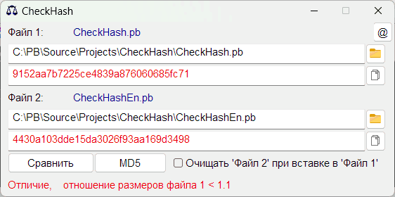
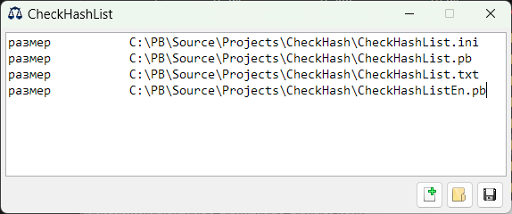

CheckHash
Назначение
Сравнить для файла используя хеш, просто получить хеш.

Взаимосвязанные
Check_md5
Изначально программа была написана на AutoIt3 с тремя вкладками, но теперь часто используемый функционал переписан на PureBasic с добавлением выбора хеша.
Как пользоваться
- Кинуть файл в первое поле для "Файл 1". Далее кинуть второй файл во второе поле "Файл 2". При каждом броске создаются хеши, и если в обоих полях есть хеши, то они сравниваются.
- Если нужно сравнить файл с хешем, то в одно поле вставить хеш, а в другое кинуть файл и нажать "Сравнить".
- Кнопка MD5 предназначена для смены типа хеша.
- Галка "Очищать 'Файл 2' при вставке в 'Файл 1'" удобна когда сравниваются разные файлы и следующее сравнение очищает поля 2-го файла, что исключает путаницу.
- Также есть кнопки "Открыть файл" и "Копировать хеш".
- Если файлы одинаковые то шрифт полей хеша становятся зелёными, если разные - то красные.
- Строка состояния показывает соотношение размеров файлов. Если размеры разные, то файлы конечно же не могут быть одинаковыми.
Настройки ini-файла
width = 560 - ширина окна
height = 248 - высота окна
HashType = 1 - тип хеша
checkbox = 0 - Галка "Очищать 'Файл 2' при вставке в 'Файл 1'"
; белая тема, цвет в RGB
Red = EE0000 - красный текст хеша, когда различие
Green = 007700 - зелёный текст хеша, когда совпадение
Blue = 000099 - синий цвет для имён файлов
Default = 000000 - сброс красного/зелёного в дефолтный цвет
; чёрная тема в Linux
Red = FF8080 - красный текст хеша, когда различие
Green = 007700 - зелёный текст хеша, когда совпадение
Blue = 8888FF - синий цвет для имён файлов
Default = AAAAAA - сброс красного/зелёного в дефолтный цвет
CheckHashList
Назначение
Проверяет хеши файлов по списку CheckHashList.txt (или другой), ранее созданному с помощью самой программы.

Изначально программа была написана на AutoIt3 с тремя вкладками, но теперь часто используемый функционал переписан на PureBasic с добавлением выбора хеша.
Первый запуск сопровождается предложением открыть папку и создать хеши для всех файлов в папке (если auto = 1), указав тип 1 (MD5) или другой.
Второй и последующие запуски при наличии файла CheckHashList.txt, проверяются файлы в соответствии с их хешами (если auto = 1). Если не соответствует, то эти файлы выводятся в окно программы. Кнопкой "Сохранить" подтверждаются новые хеши и в следующий раз уже не выводятся.
Можно добавить в автозагрузку, чтобы следить за изменениями в исполняемых файлах.
Кнопки
"Новый" - Создать новый файл-список хешей
"Обзор" - открыть файл-список хешей для проверки. Также файл можно кинуть в окно программы.
"Сохранить" - если при проверке появились файлы не соответствующие хешам, то кнопкой сохранения обновляются строки в файле-списке.
Формат списка
Начальные данные списка
1 - тип MD5 и т.д. 1-5
1 - автопроверка, пока не используется. Возможно при старте при 0 не будет происходить чтение списка и будет кнопка "Открыть список".
1 - тихий режим, используется частично. 1 - при пустом списке несоответствий нет окна, иначе при 0 пустое окно.
9 - разделитель в списке, по умолчанию табуляция (Chr(9)), указывается код символа.
C:\....\ - путь
Далее список с относительными путями (хеш путь размер, разделённый табуляцией). Строки начинающиеся с ";" игнорируются (Комментарии). Чтобы изменить путь перед ним надо поставить точку, например ".C:\....\", без кавычек. Точка сигнализирует что далее указывается путь (хеш не начинается с точки).
Входные параметры - первые 5 строк проверяются на валидность, если в них будет отличное от разрешённого, то список игнорируется.
Ошибки, которые выдаёт анализатор списка
"Сбой строки" - отсутствует разделитель. Строка должна состоять из 3-х элементов: хеш, путь, размер.
"не существует" - в списке есть файл, который возможно удалён.
"размер" - размер файла не соответствует, поэтому нет необходимости проверять хеш, так как файлы уже разные.
"хеш" - файлы одинакового размера, но с разными хешами. То есть файлы разные по содержанию.
Анализатор входных данных, первые 5 строк
"Тип хеша неверный" - допустимы в диапазоне 1-5.
"auto неверный" - допустимы 0 и 1.
"silentl неверный" - (тихий) допустимы 0 и 1.
"Путь не существует" - нет смысла проверять файлы несуществующего пути.
Настройки ini-файла (CheckHashList.ini)
width = 660 - ширина окна
height = 248 - высота окна
auto = 0 - проверять CheckHashList.txt при запуске, 0 - не проверять.
BlackTheme = 0 - включает чёрную тему
HashType = 1 - тип хеша по умолчанию при генерации файла списка.